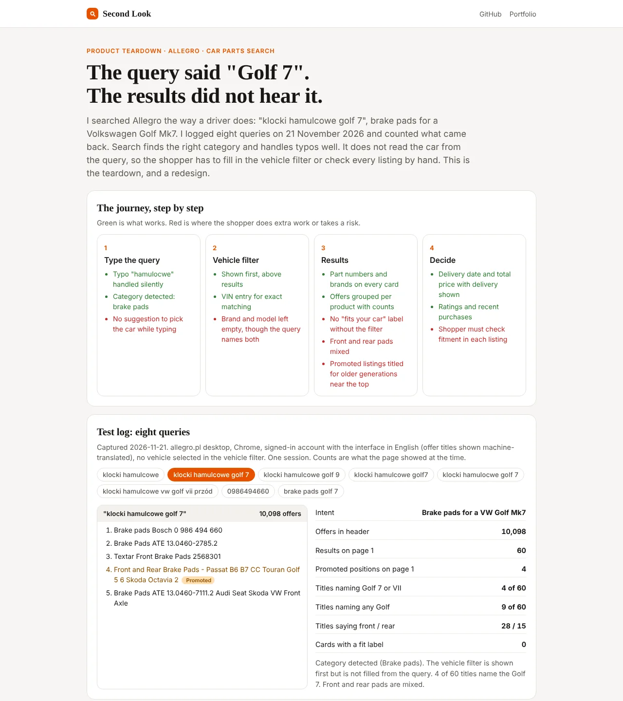

The problem
In car parts, a result is only relevant if it fits. I wanted to measure, not describe, how a large marketplace handles a query that names the car. I work on search for an automotive parts catalogue, so this is close to my day job.

What it does
- Journey map with what works and what breaks.
- Test log explorer with counts per query.
- Weighted scorecard.
- Interactive redesign with fit labels.
Findings and decisions
Confirmed in the test log
The car in the query barely changes the results
"golf 9", not on sale at the time, returned 11,517 offers with no warning, more than "golf 7" (10,098). Only 4 of 60 results on page 1 for "golf 7" named the Golf 7.
Confirmed in the test log
Promoted listings titled for other cars sit near the top
A promoted set titled for Golf 5 and 6 was at position 4 for "golf 7" and at 1 and 2 with a typo.
Hypothesis
This costs returns
Wrong-fit returns are likely, but I have no access to the data.
What I would do next
- Repeat on mobile and signed out.
- Twenty more queries across makes and parts.
- Test the redesign with drivers.